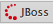

We reccomend that you develop your applications in JBoss Perspective because it provides more room to expand the route editor's canvas when you are building complex routes. If it is not already open, click  on the right side of the JBoss Developer Studio tool bar.
Table of Contents